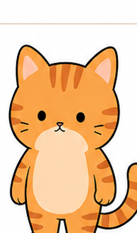
数秘 1 ｜ 口ぐせ「まず、やってみよう！」
いちばんねこ
開拓・独立・リーダーシップ。「自分で決める」が生きがいの先駆者
- 🌱 このねこの本質
- 始まり・先頭・自分の道。誰かの後ろを歩くより、「自分で決めて進みたい」ねこです。
- 😺 性格の核・よくある特徴
- 自分で選びたい、主導権を握りたい、新しいことを始めるのが得意。決断が早く、周りに頼らず一人でやろうとします。指示されるのは苦手です。
- 💪 強み
- 行動力・独立心・開拓精神・スタートダッシュ力。速さは12匹随一です。
- 🌧️ 疲れたときのサイン
- 周りにイライラしやすくなり、言葉がきつくなります。人のやり方に口を出したくなったり、「なんで私ばっかり」と感じはじめたら、SOSです。
- 🌀 内側で起きやすい葛藤（内乱）
- 自分で進みたい vs 誰かに認められたい／一人でやりたい vs 本当は助けてほしい
- ⚠️ つまずきポイント
- 頼る＝負けだと思いがち。弱さを見せられない。スピードを落とせない。
- 🍀 行動が整うヒント
- 最初の一歩だけ決める。全部やろうとしない。「先頭に立たない日」を意識的に作る。
💌 癒やしの一言：「頼ることは、弱さじゃないよ。たまには誰かに甘えて、ふかふかの毛布で休もう。」
スタート主体性自分で決めるはじまりのエネルギー
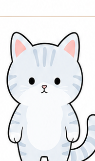
数秘 2 ｜ 口ぐせ「まあ、いいよ」
なかよしねこ
調和・協調・感受性。空気を読みすぎて疲れる平和主義者
- 🌱 このねこの本質
- 調和・共感・つなぐ力。前に出るよりも、そっと寄り添い、場のバランスを取るねこです。
- 😺 性格の核・よくある特徴
- 人の気持ちを感じ取り、空気を読むのが自然にできます。対立や争いを避けたいので、聞き役になることが多く、相手に合わせて行動を変え、本音を後回しにしがちです。
- 💪 強み
- 共感力・協調性・人と人をつなぐ力。いるだけで場がやわらかくなる存在感があります。
- 🌧️ 疲れたときのサイン
- 急に投げやりになり、「どうでもいい」と感じます。胃やお腹に不調が出たり、急に一人になりたくなったら、我慢が満杯の合図です。
- 🌀 内側で起きやすい葛藤（内乱）
- 自分の気持ちを言いたい vs 相手を傷つけたくない／一緒にいたい vs 距離を取りたい
- ⚠️ つまずきポイント
- 自分の本音が分からなくなる。NOが言えない。我慢が当たり前になる。
- 🍀 行動が整うヒント
- 1日の終わりに「本当はどうしたかった？」と自分に聞く。小さなNOを練習する。一人の時間を予定に入れる。
💌 癒やしの一言：「人のことより、まずは自分の小さなお皿を満たそう。あなたは、そこにいるだけで価値がある。」
調和共感つなぐバランス
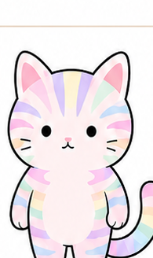
数秘 3 ｜ 口ぐせ「これ、楽しそう！」
ひらめきねこ
創造・表現・喜び。「楽しい！」だけで動く天性のエンターテイナー
- 🌱 このねこの本質
- 創造・表現・ワクワク。「面白そう！」に反応して世界を明るくするねこです。
- 😺 性格の核・よくある特徴
- 楽しいことに敏感で、ひらめきで動き、表現することで元気になります。アイデアが次々浮かび、話が飛びやすく、好き嫌いがはっきり。気分が乗ると最強、乗らないと動けません。
- 💪 強み
- 発想力・表現力・ムードメーカー力。気分が乗ったときの爆発力は圧巻です。
- 🌧️ 疲れたときのサイン
- 急に無口になる、部屋やデスクが散らかる、楽しいはずのことが楽しくない。スマホや動画に逃げ込む夜が続いたら、心が枯れかけています。
- 🌀 内側で起きやすい葛藤（内乱）
- 楽しみたい vs ちゃんとしなきゃ／自由でいたい vs 評価されたい
- ⚠️ つまずきポイント
- 継続が苦手。途中で飽きて自己嫌悪。真面目になりすぎると枯れる。
- 🍀 行動が整うヒント
- 完成より「公開」を優先する。楽しい形に変換する（遊び要素を足す）。期限を短く設定する。
💌 癒やしの一言：「飽きっぽいのは、ダメだからじゃない。あなたの頭が、世界より先に進んでいるだけ。」
創造表現ワクワク子ども心

数秘 4 ｜ 口ぐせ「ちゃんとやらなきゃ」
こつこつねこ
継続・誠実・土台。石橋を叩いて渡る、信頼の職人
- 🌱 このねこの本質
- 安定・継続・土台づくり。派手さはなくても、確実に積み上げる職人気質のねこです。
- 😺 性格の核・よくある特徴
- ルールや手順を大切にし、安心できる型があると力を発揮します。責任感が強く、コツコツ努力を続けられて、決めたことを簡単に変えません。準備をしっかりしてから動くタイプです。
- 💪 強み
- 継続力・信頼性・現実的な判断力・土台を作る力。「この人に任せれば大丈夫」の代名詞です。
- 🌧️ 疲れたときのサイン
- 「〜すべき」「〜しなきゃ」が増え、自分にも他人にも厳しくなります。融通が利かなくなり、小さなミスが許せなくなったら、がんばりすぎのサインです。
- 🌀 内側で起きやすい葛藤（内乱）
- きちんとやりたい vs 楽をしたい／守りたい vs 変えてみたい
- ⚠️ つまずきポイント
- 完璧を求めすぎる。柔軟性を失いやすい。頑張りすぎて疲れに気づかない。
- 🍀 行動が整うヒント
- 7割できたらOKにする。あえて予定を空ける日を作る。「変えないこと」と「変えていいこと」を分ける。
💌 癒やしの一言：「完璧じゃなくても、世界は壊れない。今日は少し、ルールをゆるめても大丈夫。」
安定継続信頼土台
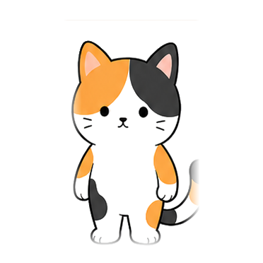
数秘 5 ｜ 口ぐせ「なんとかなる」
ふわりねこ
自由・変化・冒険。ルールと定番が苦手な自由な旅人
- 🌱 このねこの本質
- 自由・変化・体験。同じ場所にとどまらず、風に乗って世界を広げていくねこです。
- 😺 性格の核・よくある特徴
- 変化を恐れず、新しい刺激が好きで、体験から学ぶタイプ。フットワークが軽く、思い立ったらすぐ動き、環境が変わっても順応できます。
- 💪 強み
- 行動力・柔軟性・順応力・人との距離を縮める力。環境が変わるほど生き生きします。
- 🌧️ 疲れたときのサイン
- 落ち着きがなくなる、衝動買いが増える、予定を詰め込みすぎる。「今すぐ全部放り出して遠くへ行きたい」と思ったら、自由が足りていません。
- 🌀 内側で起きやすい葛藤（内乱）
- 自由でいたい vs 縛られたくない／動きたい vs 落ち着くべき？
- ⚠️ つまずきポイント
- 継続が苦手。責任から逃げたくなる。深く考える前に動いてしまう。
- 🍀 行動が整うヒント
- 変化そのものを予定に入れる。短期目標を設定する。動いた分、ちゃんと休む。
💌 癒やしの一言：「落ち着かなくていい。あなたのその揺らぎが、新しい風を運んでくる。」
自由変化冒険体験
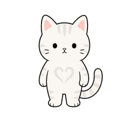
数秘 6 ｜ 口ぐせ「私がやるよ」
まもりねこ
愛情・責任・調和。守ることに生きがいを感じる大きなハート
- 🌱 このねこの本質
- 愛・責任・調和。大切な人や場を守り、安心できる居場所を整えるねこです。
- 😺 性格の核・よくある特徴
- 困っている人を放っておけず、責任感が強く、調和のとれた空間を大切にします。世話役・まとめ役になりやすく、相手のために先回りして動き、家族や仲間を最優先に考えます。
- 💪 強み
- 包容力・献身性・美的センス・安心感を与える存在感。「私がやるよ」と自然に手が動く人です。
- 🌧️ 疲れたときのサイン
- 「やってあげたのに」と不満が出て、些細なことにイライラします。見返りを数えはじめたら、自分のコップが空っぽのサインです。
- 🌀 内側で起きやすい葛藤（内乱）
- 人のために動きたい vs 自分を休ませたい／愛したい vs 自由になりたい
- ⚠️ つまずきポイント
- 自分を後回しにしすぎる。期待される役割から降りられない。「いい人」でいようと無理をする。
- 🍀 行動が整うヒント
- 自分のための時間を先に予定に入れる。手を出さず、見守る選択をする。「ありがとう」を受け取る練習をする。
💌 癒やしの一言：「自分を犠牲にする愛は、いつか苦しくなる。まずはあなた自身を、世界一大切にしていい。」
愛責任調和美
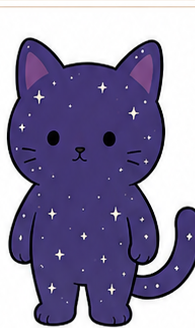
数秘 7 ｜ 口ぐせ「それって、本当？」
ふしぎねこ
探求・内省・真理。「なぜ？」を掘り続ける孤高の哲学者
- 🌱 このねこの本質
- 探求・内省・真理。表面的な答えよりも、「なぜ？」を大切にする思索家のねこです。
- 😺 性格の核・よくある特徴
- 物事の本質を知りたくて、一人の時間で力を回復します。静かな場所が好きで、観察力が鋭く、少人数や一人行動を好みます。「それって本当？」と考える癖があります。
- 💪 強み
- 洞察力・分析力・直感の鋭さ・深い理解力。物事の本質を見抜く目を持っています。
- 🌧️ 疲れたときのサイン
- 誰とも話したくなくなり、殻にこもります。批判的・皮肉っぽくなったり、思考が止まらなくなったら、一人の時間が足りていません。
- 🌀 内側で起きやすい葛藤（内乱）
- 一人でいたい vs 分かってほしい／深く考えたい vs 現実に戻らなきゃ
- ⚠️ つまずきポイント
- 孤立しやすい。考えすぎて動けなくなる。感情を置き去りにしがち。
- 🍀 行動が整うヒント
- 考えを「言葉」にして外に出す。一人時間と人と会う時間を分けて設計する。完璧な答えを探さない。
💌 癒やしの一言：「理解されなくてもいい。あなたのその独特な世界観こそが、いつか誰かの光になる。」
探求内省真理静けさ
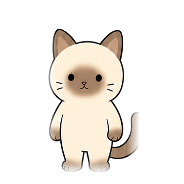
数秘 8 ｜ 口ぐせ「まだいける」
まっすぐねこ
達成・力・豊かさ。結果で証明したいパワフルな挑戦者
- 🌱 このねこの本質
- 実行・達成・現実化。思い描いた理想を、行動と結果で形にしていくねこです。
- 😺 性格の核・よくある特徴
- 目標志向が強く、結果を出すことに価値を感じ、責任を背負う覚悟があります。決めたことは最後までやり切り、リーダー役を任されやすく、強く見られがちで弱音を吐けません。
- 💪 強み
- 実行力・継続的な努力・現実を動かす力・周囲を引っ張る影響力。
- 🌧️ 疲れたときのサイン
- 勝ち負けにこだわりすぎる、休むことに罪悪感を覚える、体の不調を無視しがちになる。「まだいける」が口ぐせになっていたら、もういけていない証拠です。
- 🌀 内側で起きやすい葛藤（内乱）
- 成功したい vs 嫌われたくない／強くありたい vs 本当は甘えたい
- ⚠️ つまずきポイント
- 自分に厳しすぎる。力を抜くのが苦手。人に任せられない。
- 🍀 行動が整うヒント
- 目標とは別に「休む予定」を入れる。弱音を吐ける相手を一人決める。成果ではなく過程を振り返る。
💌 癒やしの一言：「戦わなくても、あなたの価値は変わらない。鎧を脱いだあなたも、十分に愛されている。」
実行達成現実化力
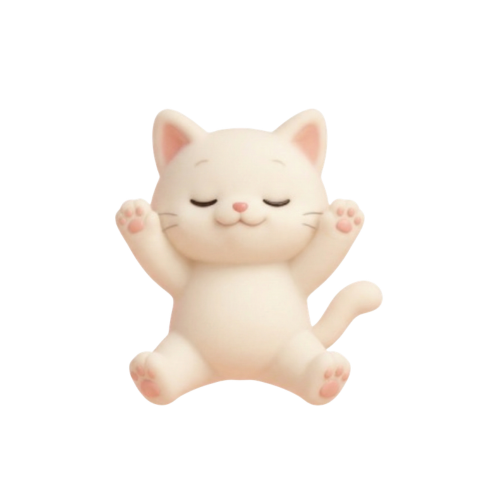
数秘 9 ｜ 口ぐせ「大丈夫だよ」
あんしんねこ
包容・共感・俯瞰。すべてを受け入れる、器の大きな賢者
- 🌱 このねこの本質
- 受容・統合・手放し。すべてを否定せずに受け入れ、場と人に安心を広げるねこです。
- 😺 性格の核・よくある特徴
- 争いを好まず、全体を見る視点を持ち、人の痛みに気づきやすいタイプ。聞き役・まとめ役になることが多く、空気が荒れると自然と間に入り、「大丈夫だよ」と人をなだめます。そのぶん自分の本音は後回しにしがちです。
- 💪 強み
- 包容力・共感力・全体を俯瞰する力・人を安心させる存在感。
- 🌧️ 疲れたときのサイン
- 自分の気持ちがわからなくなり、周囲に同化しすぎてしまいます。何もしたくなくなり、「なんでもいい」しか言えなくなったら、他人の感情を吸い込みすぎています。
- 🌀 内側で起きやすい葛藤（内乱）
- みんなを大切にしたい vs 自分を大切にしたい／手放したい vs 役割を降りられない
- ⚠️ つまずきポイント
- 「いい人」でいようとしすぎる。境界線があいまいになる。自分の望みを後回しにする。
- 🍀 行動が整うヒント
- 自分の感情を言葉にする練習をする。一人の時間を意識的に確保する。「手放す役割」を一つ決める。
💌 癒やしの一言：「いい人にならなくていい。誰かのためじゃなく、自分のために生きていいんだよ。」
受容手放し統合安心
ここからは、マスターナンバーの3匹です。11・22・33は、それぞれ2・4・6の性質を土台に持ちながら、ひとまわり大きなエネルギーを扱う、少し特別なねこたちです。
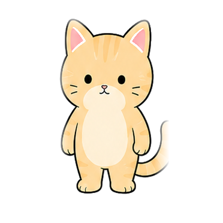
数秘 11（マスターナンバー）｜ 口ぐせ「これ、違う気がする」
ひかりねこ
直感・啓蒙・橋渡し。見えないものを受け取る繊細なアンテナ
- 🌱 このねこの本質
- 直感・感受性・メッセージ。なかよしねこ（2）の繊細さの先に、目に見えないものを感じ取り、ことばや存在で光を届ける力を持つねこです。
- 😺 性格の核・よくある特徴
- 感覚がとても鋭く、空気や人の感情を瞬時に察知します。理屈より「なんとなく」を信じ、ひらめきや予感がよく当たります。周囲の影響を受けやすく、音・光・人混みが苦手なことがあります。
- 💪 強み
- 高い直感力・インスピレーション・共感性の高さ・人に気づきを与える存在感。
- 🌧️ 疲れたときのサイン
- 神経が過敏になり、人の感情に飲み込まれます。人混みで頭痛がしたり、小さな音や光が気になって眠れなくなったら、アンテナの受信オーバーです。
- 🌀 内側で起きやすい葛藤（内乱）
- 感じたまま動きたい vs 理解されたい／特別でありたい vs 普通でいたい
- ⚠️ つまずきポイント
- 刺激を受けすぎて疲弊する。自分の感覚を疑ってしまう。現実世界に足がつきにくい。
- 🍀 行動が整うヒント
- 一人で静かに過ごす時間を確保する。感じたことを言葉やメモに残す。境界線（距離感）を意識する。
💌 癒やしの一言：「その繊細さは、才能だよ。理屈で説明しなくていい、あなたの感覚を信じて。」
直感感受性メッセージ光
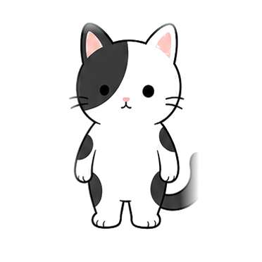
数秘 22（マスターナンバー）｜ 口ぐせ「まだ形になっていない」
しっかりねこ
構築・ビジョン・現実化。大きな夢を形にする建築家
- 🌱 このねこの本質
- 具現化・構築・現実創造。こつこつねこ（4）の堅実さに壮大なビジョンが加わった、大きな理想を現実の形として「建てる」ねこです。
- 😺 性格の核・よくある特徴
- 理想を現実に落とし込む力が強く、長期視点で物事を考えます。スケールの大きな構想を描き、実務と理想の両方を見ていて、周囲から「頼れる人」と見られやすいタイプです。
- 💪 強み
- 圧倒的な実行力・構造化と設計の力・社会的影響力・夢を現実にする持久力。
- 🌧️ 疲れたときのサイン
- 「まだ形になっていない」と焦り、急に自信を失います。理想が高すぎて動けなくなったり、一人で抱え込んだら、設計図を広げすぎています。
- 🌀 内側で起きやすい葛藤（内乱）
- 大きな夢を叶えたい vs 失敗したくない／完璧にやりたい vs 今は未完成な自分
- ⚠️ つまずきポイント
- 理想と現実のギャップに苦しむ。責任を背負いすぎる。助けを求めるのが遅くなる。
- 🍀 行動が整うヒント
- 夢を「段階」に分けて考える。一人で完成させようとしない。今ある土台を認める。
💌 癒やしの一言：「焦らなくていい。あなたの夢は大きいから、時間がかかるのは当たり前。」
具現化構築ビジョン現実創造
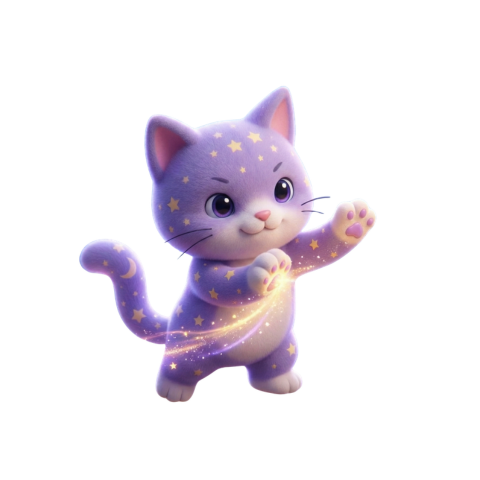
数秘 33（マスターナンバー）｜ 口ぐせ「普通じゃなくていいよ」
まほうねこ
無償の愛・癒やし・奇跡。常識を超えた愛で包む魔法使い
- 🌱 このねこの本質
- 無条件の愛・癒やし・常識を超えた包容。まもりねこ（6）の愛情をさらに深めた、存在するだけで周りを癒やすねこです。
- 😺 性格の核・よくある特徴
- 理屈を超えて人をまるごと受け入れ、損得抜きで誰かのために動けます。存在するだけで場がゆるむ不思議な魅力があり、感情の波が大きく、「普通はこうすべき」という常識の枠に納まりません。
- 💪 強み
- 無条件の愛・癒やしの力・スピリチュアルな感性・天然の魅力とカリスマ性。
- 🌧️ 疲れたときのサイン
- 「誰にも理解されない」という深い孤独感に沈みます。常識の押しつけに息苦しくなったり、突発的な現実逃避に走りたくなったら、役割の脱ぎどきです。
- 🌀 内側で起きやすい葛藤（内乱）
- みんなを愛したい vs 自分がすり減っていく／ありのままでいたい vs 「普通」を演じなきゃ
- ⚠️ つまずきポイント
- 現実離れしやすく、地に足がつきにくい。繊細すぎて生きづらさを感じやすい。お金や見返りを受け取ることへの抵抗が強い。
- 🍀 行動が整うヒント
- 「常識的な自分」の役割を脱げる一人の時間（自分だけの世界）を確保する。好きな空想の世界に没頭して充電する。「受け取ること＝愛の循環」と捉え、お礼やお金を受け取る練習をする。
💌 癒やしの一言：「あなたはそのままで、愛の魔法使い。狭い常識に自分を無理やりはめ込まなくていいんだよ。」
無償の愛癒やし奇跡宇宙